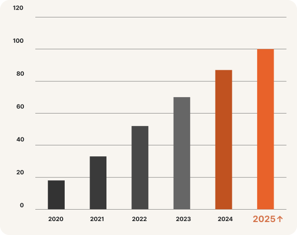
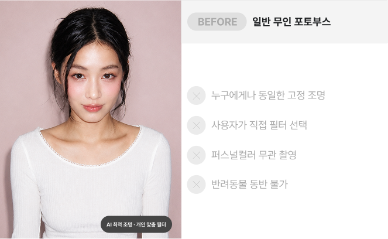
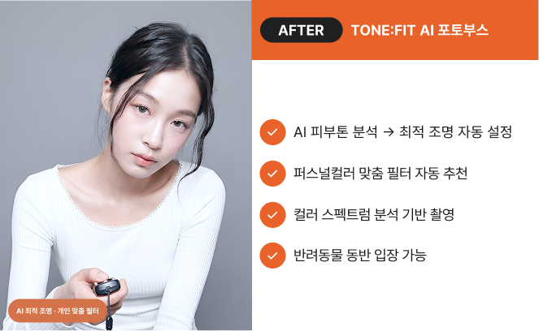
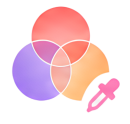
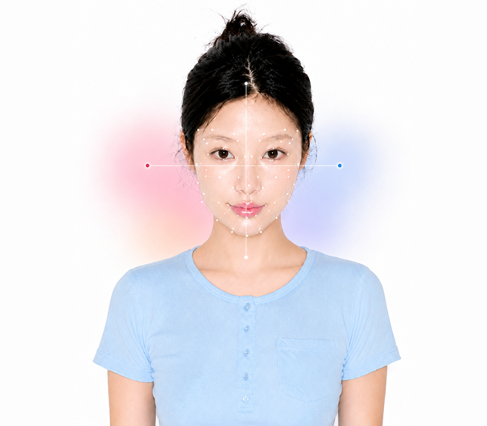
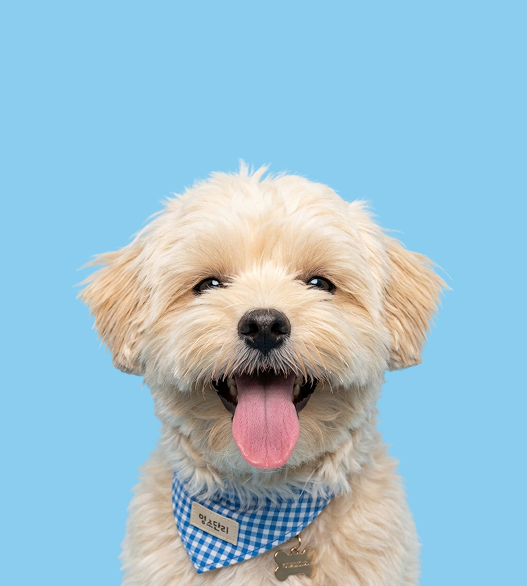
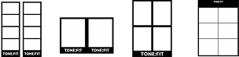

TONE:FIT
BRAND STORY
TONE:FIT은 독보적인 AI 컬러 분석 기술로
모든 고객의 고유한 분위기를 가장 완벽하게 이끌어냅니다
TONE:FIT VISION
TONE
고객 고유의
피부 톤과 분위기
FIT
기술로 완성하는
최적의 맞춤 세팅
TONE:FIT : 모든 고객에게 완벽하게 맞춰진 프리미엄 포토 경험을 제공합니다
아직 아무도 만들지 않은
AI 퍼스널 컬러
무인 포토부스
일반 포토부스가 프레임을 선택하는 동안,
TONE:FIT은 AI가 피부를 분석해 가장 어울리는
조명·필터·컬러를 자동으로 설정합니다.
퍼스널컬러 검색량,
5년 새 1,200% 폭증
MZ세대를 중심으로 퍼스널컬러 진단 수요가 폭발적으로
성장하고 있습니다. 반려동물 양육 가구도 700만을 돌파했습니다.
그러나 이 두 시장을 동시에 공략한 무인 포토부스 브랜드는 아직 없습니다.

무엇이 다른가
일반 포토부스가 제공하는 '선택'과 달리, TONE:FIT은 AI가 분석하여 최적의 환경을 자동 설정합니다.

BEFORE
일반 무인 포토부스

AFTER
18K+ AI 퍼스널 컬러 분석
촬영이 아니라 분석에 가까운 기술
고객이 키오스크 앞에 서는 순간부터 결과물 출력까지, AI가 전 과정을 자동 처리합니다.
피부 명도·채도를 분석
AI가 피부 톤과 채도를 정밀 분석하여 자연스러운 톤 밸런스를 설계합니다.
분위기에 맞는 톤 추천
촬영 분위기와 스타일을 분석해 가장 어울리는 톤을 추천합니다.
조명 자동 보정
주변 조명 환경을 자동으로 인식해 밝기와 색온도를 자연스럽게 보정합니다.

퍼스널 컬러 기반 색감 튜닝
퍼스널 컬러와 피부 톤을 기반으로 얼굴이 더욱 돋보이는 색감을 제공합니다.

*분석 결과는 촬영 환경, 메이크업, 조명에 따라 달라질 수 있습니다.
AI 퍼스널 컬러 분석 기반의
새로운 셀프 포토 경험
사용자의 피부톤·무드·조명·컬러를 분석해 가장 잘 어울리는 결과물을 제공
기술력으로 증명합니다
TONE:FIT AI가 쌓아온 데이터와 정확도
AI 퍼스널컬러
분석 정확도
누적 피부 분석
데이터 건수
피부톤 세부
분류 유형
키오스크 내
AI 처리 속도
반려동물과 함께하는
소중한 순간
TONE:FIT은 반려동물과 함께 입장할 수 있는 AI 무인 포토부스입니다.
가족 구성원이 된 반려동물과 함께, 최적의 사진을 남겨드립니다.
반려동물 동반 촬영
소형견·고양이 등 소형 반려동물과 함께 촬영. 매장 청결 기준을 준수합니다.
AI 자동 최적화
반려동물이 있어도 AI가 조명과 필터를 자동 최적화하여 선명하고 아름다운 결과물을 만듭니다.

FRAME
& SEASON CONTENT
계절과 트렌드, 다양한 콜라보 콘텐츠를 반영한
새로운 프레임 경험을 시즌별로 선보입니다.
TONE:FIT은 퍼스널 컬러 기반의 다양한 톤과 무드를 적용해
사용자에게 가장 잘 어울리는 프리미엄 경험을 제공합니다.
